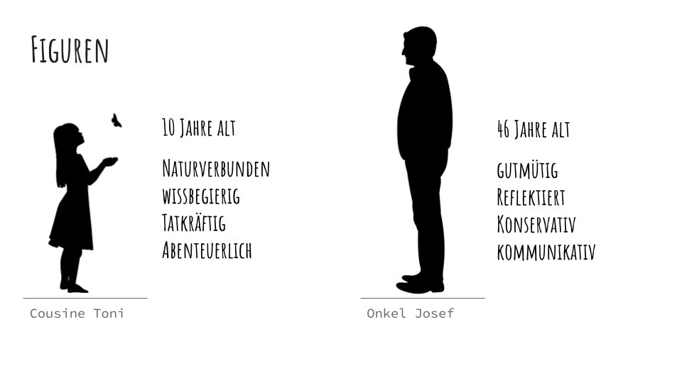

Nature Reloaded
Nature Reloaded ist ein Hörspiel mit interaktiven Elementen mit dem thematischen Schwerpunkt Klimawandel und Umweltschutz.
Klimawandel ist schließlich mit allen Sinnen wahrnehmbar, wir können ihn nicht nur sehen und fühlen, sondern auch hören.
Bei diesem Hörspiel geht es also um bewusstes auditives Wahrnehmen.
Die Storyline dreht sich um deine verschwunde Cousine, Toni.
Als du deinen Onkel Josef besuchst, erzählt er dir aufgelöst, dass seine Tochter Toni nach einem Streit in den Wald gelaufen sein muss. Zusammen macht ihr euch auf die Suche nach ihr, um sie noch vor Einbruch der Dunkelheit zu finden.

Währenddessen unterhältst du dich mit deinem Onkel, welcher versucht das Verhalten und die Einstellung seiner weggelaufenen Tochter nachzu-vollziehen.
Dabei spricht er über unterschiedliche, den Klimawandel betreffende Themen.
Ein Beispiel Thema wäre das Stromsparen im Haushalt, hier ein kleiner Ausschnitt aus unserem
Hörspiel-Drehbuch.